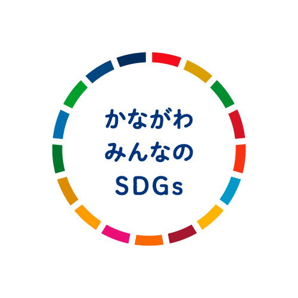
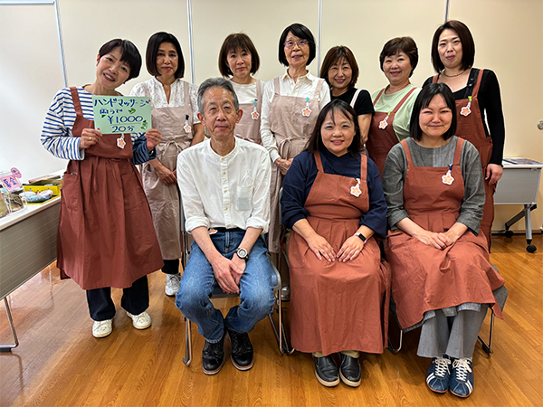
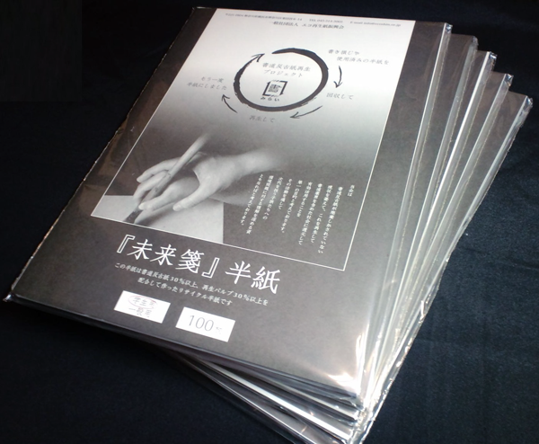

かながわSDGsパートナーとは
神奈川県では、企業・団体等における SDGsの取組拡大を目的に「かながわSDGsパートナー」制度を立ち上げ、これまで多くの企業や団体等にパートナーになっていただいています。
また、パートナー間の異業種交流やマッチング等を行い、 SDGsの推進に向けた新たなビジネスを創出する場として、かながわSDGsパートナーミーティングを開催しています。
また、パートナー間の異業種交流やマッチング等を行い、 SDGsの推進に向けた新たなビジネスを創出する場として、かながわSDGsパートナーミーティングを開催しています。
かながわ みんなのSDGsとは
SDGsの取組を進めている又はこれから取り組もうという企業・団体等に対しヒントとなるような取組を「かながわSDGsパートナー」から募集し、「見える化｣する制度です。令和４年度から始まったこの制度では、ご応募いただいた中で特にみんなの参考になる取組を表彰しており、３回目となる令和６年度は41の企業・団体等から56事例が集まり、パートナー６社を表彰しました。また、令和６年度からは新たに「みんなのSDGs連携賞」を設け、2者以上のかながわSDGsパートナーが連携して実施した取組についても表彰しています。令和7年度も9月16日から取組を募集しました。
詳細はこちら
詳細はこちら
表彰の種類
自社・自団体の取組
- ①みんなのSDGs賞
取り組みやすい事例をパートナーや企業・団体等による投票にて選定します。 - ②神奈川県中小企業診断協会賞
神奈川県中小企業診断協会が、中小企業診断士の知見から社会課題への貢献度を評価し選定します。
パートナー2者以上の連携の取組
- ③みんなのSDGs連携賞
2名以上のパートナー同士が連携して実施した取組を有識者等による審査会で評価し、選定します。
【募集する取組】
①② ： かながわSDGsパートナーが行うSDGsに向けた取組のうち、次の視点に一つでも該当する取組を募集します。
- ぴぴっとくる
直感的に良いと感じ、共感できる内容である - 実施効果
効果が明確であり、行動変容につながる内容である - 取り組みやすさ
取組の内容がわかりやすく、他の企業・団体等でも実践しやすい内容である - 費用・労力
多大な資金、人材を要さずとも実現可能な取組である - 継続性
自社の本業を通じた取組で企業価値（人材確保、ブランド力等）を高めている
③ ： 2者以上のかながわSDGsパートナーが連携して実施する（した）取組のうち、連携ロゴマークの審査を通過した事例を募集します。
※連携ロゴマークの詳細はこちら
令和7年度の投票について
「かながわ みんなのSDGs」に、35者より44事例の応募がありました。
「参考になった」、「取り組みやすい」と感じた取組をパートナーや一般企業・団体から投票していただき、上位2者は「みんなのSDGs賞」として、２月パートナーミーティング（テクニカルショウヨコハマ2026併催）で表彰します。
取組一覧からご覧いただき、ぜひ投票をお願いします。
「参考になった」、「取り組みやすい」と感じた取組をパートナーや一般企業・団体から投票していただき、上位2者は「みんなのSDGs賞」として、２月パートナーミーティング（テクニカルショウヨコハマ2026併催）で表彰します。
取組一覧からご覧いただき、ぜひ投票をお願いします。
※投票は令和8年1月9日（金）で終了しました。たくさんのご投票ありがとうございました！
みんなのSDGs賞応募一覧
| No. | 取組のタイトル | 企業・団体名 |
|---|---|---|
| 1 | 省エネに貢献する新しい日除け『ハニカムパネル』で日本から熱中症をなくす | 日栄鋼材株式会社 |
| 2 | 「相模原発・循環型福祉ビジネスプロジェクト」 ― 環境と福祉と地域がつながるオガチャッカ | 株式会社ネットフィールド |
| 3 | 「作る技術から、治す技術へ」 | 有限会社津田製作所 |
| 4 | 廃材を使ったアート活動。 | NPO法人studioFLAT |
| 5 | 請求書の電子化によりペーパーレス・業務効率化を実現! | 紘永工業株式会社 |
| 6 | 「ＩＣＴで障害者の職域拡大」テーマのプレゼン発表会を実施 | 株式会社日本コンピュータコンサルタント |
| 7 | "もったいない"を"ありがとう"に！ | 株式会社コア・エレクトロニックシステム |
| 8 | 改良メダカで広げる環境教育 | 一般社団法人 IMA国際メダカ愛好会 |
| 9 | やさいクレヨン＆やさい絵の具ワークショップ開催 | 株式会社大戸屋ホールディングス |
| 10 | ハガミさん 印刷時に出る端紙や余剰紙を商品に | 株式会社クリエイト横浜 |
| 11 | 機材のコードレス化とトラックのAT化による作業負荷の低減と生産性の向上 | 株式会社日装 |
| 12 | ANTONE（アントーン）で障がい者雇用を促進 | イマジネーション株式会社 |
| 13 | 持続可能な経営のための事業継続力強化計画 | 聖和電設株式会社 |
| 14 | 包材の最適化により省資源とコスト削減を実現 | エバラ食品工業株式会社 |
| 15 | シニア世代のための料理教室を大学生と共同開催 | エバラ食品工業株式会社 |
| 16 | 印刷の文化を次世代へつなぐ― ガリ版印刷体験による資源循環と文化継承 | 一般社団法人日本グラフィックサービス工業会神奈川県支部 |
| 17 | 「若者世代NPO法人」への教育事業支援活動・開発実践！ | 任意団体「シニア・ハマ・カレッジ」運営委員会 |
| 18 | スーパー分別プロジェクト南足柄ペットボトルキャップ分別プロジェクトへ参加 | 株式会社デコリア |
| 19 | 剪定ゴミをゴミにしない！バイオネストで誰でもSDGsが自分事になる。 | アトピッコハウス（株） |
| 20 | 温暖化を止める頑張らない庭づくり「ゆるっと野草ずぼらガーデニング」 | アトピッコハウス（株） |
| 21 | 小さな昆虫が大きな実りをもたらす「インセクトホテル」を広めよう | アトピッコハウス（株） |
| 22 | 零細企業だからできる社会福祉法人との協働による地域支援活動 | アトピッコハウス（株） |
| 23 | だれもが楽しめる社会へ | 特定非営利活動法人AYA |
| 24 | 職場において「すべての人に尊厳を」 | 株式会社AESCジャパン |
| 25 | 持続可能な未来に挑戦し続ける | 株式会社AESCジャパン |
| 26 | 気候変動マネジメント－ネットゼロへの移行 | 株式会社AESCジャパン |
| 27 | 製品の温室効果ガス排出量算定・低減の取り組み | 株式会社AESCジャパン |
| 28 | 夢と希望のOn Line Event 国際交流を児童養護施設で開催 | 日本ムーグ株式会社 |
| 29 | できることから無理なく楽しく、みんなで取り組む！ 事業を通した環境貢献アクション＆子育て両立サポート | 原貿易株式会社 |
| 30 | 国際デーを通して社会課題を自分事に | 株式会社An-Nahal |
| 31 | 暖かさを無駄にしない防寒術 | 株式会社エニマス |
| 32 | 商工会議所・会報誌に「未来をつくるＳＤＧｓ講座」を連載 | 株式会社アレックスプランニング |
| 33 | 搾汁後ゆず果皮を生かした 香りのアップサイクルと香育の取組 | アロマスクールMoriNote |
| 34 | 地域防災活動「コンロから目をハナさない」 | さがみ農業協同組合 |
| 35 | お札（日本銀行券）に関する校外学習支援（出張授業・特別工場見学）の実施 | 独立行政法人 国立印刷局 小田原工場 |
| 36 | 地域みんなで未病対策！ | 医療法人社団カワサキ |
| 37 | 食品ごみを電気だけじゃなく肥料にも！ | 株式会社Jバイオフードリサイクル |
| 38 | 地域の未来を担う人財育成！「職業体験」の受入れを実施 | 京浜電設株式会社 |
| 39 | 屋上のデッドスペースを有効活用して電力自給率UP! | 宮本土木株式会社 |
| 40 | すべての従業員で取り組んだ脱炭素活動 | 株式会社ティー・エム・サービス |
| 41 | 食品配送から始めるSDGs | 東京中央食品株式会社 |
| 42 | 中小企業へのSDGｓ経営導入支援による実践的な伴走支援モデルの確立 | 神奈川県中小企業診断協会 |
| 43 | 中小企業における業種別省エネ汎用モデル構築による | 神奈川県中小企業診断協会 |
| 44 | 人を大切にするSDGs経営をサポートします！！ | 神奈川県中小企業診断協会 |
【投票期間】
令和7年12月10日（水）～令和8年1月9日（金）
※投票は令和8年1月9日（金）で終了しました。たくさんのご投票ありがとうございました！
【投票の注意点】
- 参考になると思った取組を２つ選択してください。
（それぞれ2つ違う取組を選択してください。重複での選択はできません。） - 投票は、１つのアドレスにつき一回となります。
【表彰の種類】
- ① みんなのSDGs賞
取り組みやすい事例をパートナーや一般企業・団体による投票にて選定 - ② 神奈川県中小企業診断協会賞
神奈川県中小企業診断協会が、中小企業診断士の知見から社会課題への貢献度を評価・表彰 - ③ 連携賞
有識者等による審査会での評価を行い選定
みんなのSDGs連携賞応募一覧
| No. | 企業・団体名 | 取組のタイトル | 連携先企業・団体名 | 他連携先企業・団体名 |
|---|---|---|---|---|
| 1 | NPO法人フェアスタートサポート | 児童養護施設の子ども達へキャリア教育の機会を提供 | 有限会社グリーンフーズあつみ | |
| 2 | 株式会社青葉ギフト | 自主製品の新たな販路、福祉商品に交換できるデジタルギフトの活用 | 認定NPO小田原なぎさ会 | 小田原市役所、小田原市社会福祉協議会 |
| 3 | 特定非営利活動法人セカンドリーグ神奈川 | 神奈川の食品ロスを神奈川の支援活動で有効活用 | 東京中央食品株式会社 | |
| 4 | 株式会社ファンケル | アップサイクルで咲かせる未来の花～ファンケル・石井造園と創る緑の学校～ | 石井造園株式会社 | |
| 5 | 株式会社デコリア | 産業能率大学インターンシップ異業種連携事例工場見学会の実施 | 株式会社高部金属 | |
| 6 | 株式会社明日葉 | 神奈川県内を中心に全70か所の児童クラブが黒板壁紙端材SDGsアートに挑戦！ | 株式会社デコリア | |
| 7 | 株式会社明日葉 | 明日葉の児童クラブで「水」がテーマのSDGs教室第2弾を実施！ | ウォータースタンド株式会社 | |
| 8 | 株式会社明日葉 | 明日葉の児童クラブでワックスの廃液を使用したSDGs出前授業を実施！ | 和光産業株式会社 | |
| 9 | 株式会社明日葉 | 明日葉の児童クラブで小田原の魅力再発見！3社連携で夏休み特別イベント開催 | さがみ信用金庫 | 鈴廣かまぼこ株式会社 |
| 10 | 株式会社明日葉 | 出前授業のコラボ開催からの連携！国立印刷局主催の観桜会でのブース出展！ | 国立印刷局小田原工場 | 株式会社デコリア |
| 11 | 株式会社 ＭＵＲＯＮＥ | 廃棄トマトをアップサイクルしてカルトンに | 横浜農業協同組合 | |
| 12 | 薬糧開発株式会社 | 食品に新たな命を～廃食品を家畜の飼料にリサイクル～ | 日本ダスト株式会社 | |
| 13 | レンブラントホテル海老名 | 生ごみを豚の餌へ！食品リサイクルループを実現 | 小田急電鉄株式会社 | |
| 14 | 株式会社BPLab | 不要な衣料品回収イベント | 横浜Fマリノス |
令和7年度の募集について
令和7年度もみんなのヒントとなる取組を募集します。
ご応募いただいた取組は全て県ホームページで公表し、中でも特に他者の参考となる取組は、令和8年2月のテクニカルショウヨコハマ内での表彰やリーフレット等で広く発信します。
ご応募いただいた取組は全て県ホームページで公表し、中でも特に他者の参考となる取組は、令和8年2月のテクニカルショウヨコハマ内での表彰やリーフレット等で広く発信します。
【募集期間】
令和7年9月16日（火）～令和7年11月15日（土）
※募集は11月15日で終了しました。たくさんのご応募ありがとうございました！
【対象者】
かながわSDGsパートナー
※パートナーは随時募集しており、パートナー登録申込みと同時に、かながわ みんなのSDGsにもお申し込みいただけます。
みんなのSDGs連携賞のみ ： 2者以上のパートナー同士で連携した取組を実施した企業・団体等
【応募方法】
次の応募フォームより応募申請書の提出をお願いします。
※自社・自団体の取組の応募はこちらから
※パートナー２者以上の連携の取組の応募はこちらから
※かながわSDGsパートナーの登録はこちらからお申し込みください。
令和6年度 かながわ みんなのSDGs
受賞パートナー取材記事
神奈川の海岸線435kmを歩いてごみ拾い
顕在化した課題と今後の対応策
顕在化した課題と今後の対応策

自分たちが暮らす神奈川県の海岸のごみはどんな状況なのか―。
海洋プラスチックごみ問題の啓発活動を行っているＮＰＯ法人海の森・山の森事務局が2020年４月から始めたのが、令和６年度「みんなのSDGs賞」を受賞した「プラごみバスターズ事業」です。神奈川県の海岸線を毎月１回、一筆書きのように歩いてごみを拾い、プラごみ分布の実態を調べました。最西端の湯河原から最東端の多摩川河口まで、海岸線の距離は４３５km。活動は全６０回、４年９カ月におよび、回収したごみの総重量は３ｔを超えました。集めたごみのデータを分析していくと、効率的に神奈川県の海岸を美化するためのヒントが見えてきました。
海洋プラスチックごみ問題の啓発活動を行っているＮＰＯ法人海の森・山の森事務局が2020年４月から始めたのが、令和６年度「みんなのSDGs賞」を受賞した「プラごみバスターズ事業」です。神奈川県の海岸線を毎月１回、一筆書きのように歩いてごみを拾い、プラごみ分布の実態を調べました。最西端の湯河原から最東端の多摩川河口まで、海岸線の距離は４３５km。活動は全６０回、４年９カ月におよび、回収したごみの総重量は３ｔを超えました。集めたごみのデータを分析していくと、効率的に神奈川県の海岸を美化するためのヒントが見えてきました。
「海の素晴らしさだけでなく、海の現実も知らせなければ
代表の豊田直之さんは、国内外の海を撮影するプロの水中カメラマンです。２０年ほど前、海を漂うレジ袋が目につくようになり、一部の国ですでに問題視されていた海洋プラごみが、日本の海でも増えつつあることを実感したと言います。水中カメラマンとして「海の素晴らしさだけでなく、こうした現実も多くの人に知らせなければ」と、海の様々な姿を記録した写真スライドショーに合わせて音楽家が生演奏する「ビジュアルコンサート」を開催。好評を博し、個人での運営が難しい規模になったことから２０１２年に法人を設立しました。その後、次第に世の中が海洋プラスチック汚染やマイクロプラスチック問題に注目するように。活動も脚光を浴びました。
海岸のごみ拾いならコロナ禍でもやれる！
そんな中、新型コロナウィルスが流行します。活動をやめる団体もありましたが、メンバーで話し合い「自分たちでやれるだけのことをやろう」と決めました。そこで出たアイデアが海岸の美化活動です。「考えてみたら神奈川の海岸のことは、よく行く一部しか知らないんです。それなら全部歩いて見てみようかって……」。
翌朝、湯河原を出発。“３匹のおっさん”と称した60代のメンバー３人による「プラごみバスターズ」の活動がスタートしました。ごみを拾いながら海岸を歩くといっても地形は様々。
砂浜だけでなく港湾、ロープにぶら下がって進むような険しい岩場もあります。
だからこそ安全管理を徹底。仕事や磯釣り経験で培った的確な気象予測で活動日を決め、津波警報などに備えて避難ルートも調べました。下見をし、毎回複数の終点候補地を用意していましたが、駅からも遠くバス便もわずかな地域もあり、頭を悩ませたことも。三浦半島では、潮が満ちると道がなくなる箇所も多く、時間との闘いになることも少なくありませんでした。
翌朝、湯河原を出発。“３匹のおっさん”と称した60代のメンバー３人による「プラごみバスターズ」の活動がスタートしました。ごみを拾いながら海岸を歩くといっても地形は様々。
砂浜だけでなく港湾、ロープにぶら下がって進むような険しい岩場もあります。
だからこそ安全管理を徹底。仕事や磯釣り経験で培った的確な気象予測で活動日を決め、津波警報などに備えて避難ルートも調べました。下見をし、毎回複数の終点候補地を用意していましたが、駅からも遠くバス便もわずかな地域もあり、頭を悩ませたことも。三浦半島では、潮が満ちると道がなくなる箇所も多く、時間との闘いになることも少なくありませんでした。
ごみの量が多い半島部を重点的に清掃することが美化への近道
こうして集めたごみの累計３ｔ５０㎏のうち２ｔがプラごみで、三浦市と横須賀市のごみが全体の６５％を占めていることも分かりました。海岸線の距離が長いことを考慮してもその量は多く、東京湾と相模湾に浮遊するごみが、潮の流れや風の影響で突き出た半島部に引っかかると考えることができました。豊田さんは「この結果からいくと三浦と横須賀、次に多かった真鶴付近のごみを集中的にみんなで拾えば、あっという間に神奈川の海をきれいにできるはず」と話します。
一方、横浜・川崎の港湾エリアでは、船から荷物を積み込むために待機している大型車両のドライバーが飲食物のごみや、し尿をペットボトルに入れて投棄している状況を目の当たりに。「都内のふ頭のようにトイレや広い駐車場を備えたコンビニもないため、道路の中央分離帯の手入れされていない植栽部分がごみ捨て場になっていました。風が吹けばごみは海へ飛んでしまいます」。事務局では早速、実験的に植栽をなくすことや、待機するドライバーが求める設備を整えることなどを横浜市へ提案したと言います。
さらに今回、15市町を歩いて気付いた大きな問題は、自治体によってごみの分別方法が異なることです。市境を越えた瞬間に「もえるごみ」が「もえないごみ」として扱わなければならなくなり、袋を入れ替える必要が生じました。「焼却場のこともあるのですぐに実現するのは難しいかもしれませんが、神奈川県にはぜひ『全国で初めてごみの分別基準を統一します』と宣言してもらいたい」と豊田さん。
素晴らしい景観を楽しみながら一緒にごみ拾いを
活動中、景観の素晴らしい場所が多くあったそうで、今後は景観を楽しみながら親子でごみの多かったエリアを美化する企画をしたいと豊田さんらは思い描いています。
また、岩場の奥などに入り込んだマイクロプラスチックを人の手で回収する作業には限界を感じたと言い、体内にプラスチックを分解するバクテリアを持つとされる「フナムシ」に着目。研究者を訪ねて話を聞き、いずれ海岸美化に活用することを考えて自宅で飼育もしているそうです。
法人ではほかにも学校での出前授業などを行っています。社会全体のプラごみへの意識はまだ低いと豊田さんは憂いていますが、「子どもたちが危機感を持って取り組んでいる姿を見ると、この子たちの未来を奪うことできないと感じます。これからも一緒にやりましょうと呼びかけていきたいです」と話していました。
また、岩場の奥などに入り込んだマイクロプラスチックを人の手で回収する作業には限界を感じたと言い、体内にプラスチックを分解するバクテリアを持つとされる「フナムシ」に着目。研究者を訪ねて話を聞き、いずれ海岸美化に活用することを考えて自宅で飼育もしているそうです。
法人ではほかにも学校での出前授業などを行っています。社会全体のプラごみへの意識はまだ低いと豊田さんは憂いていますが、「子どもたちが危機感を持って取り組んでいる姿を見ると、この子たちの未来を奪うことできないと感じます。これからも一緒にやりましょうと呼びかけていきたいです」と話していました。
団体概要
- NPO法人海の森・山の森
- 設 立 2012年
- 所在地 横浜市
事業内容
神奈川県の海・山・川・森といった豊かな自然を次世代につなげるべく、写真・音楽・映像・語りを組み合わせた表現活動、地域に根差した清掃・調査・体験の場づくりなどを通じ、自然と人のつながりを実感できるさまざまな活動を実施。
ケアする人をケアしたい
カフェスタイルで悩みを語り合う
カフェスタイルで悩みを語り合う

「ケアラー」とは、家族や近親者たちの介護、看護、療育などを無償で行う人のこと。なかでも、育児と介護を掛け持ちで行う「ダブルケアラー」、仕事と介護を両立する「ビジネスケアラー」、病気の家族の世話や家事などを18歳未満の子どもが日常的に行う「ヤングケアラー」が近年増加し、社会問題となっています。令和６年度「みんなのSDGs賞」を受賞した一般社団法人MilkyWayは、ケアする人をケアする取り組み「ケアラー支援」を行っている団体です。
「介護を受けていることを近所に知られたくない」と嫌がる当事者、「施設ではなく住み慣れた自宅で面倒をみてあげて」と主張する遠方の家族――。「本人たちは悪気なく発した言葉でも、それがケアラーを追い詰め、社会から孤立させてしまうことがあるのです」と話すのは、同法人代表理事の小林貴喜さん。自らの状況を周囲に話すこともできず、勉強や遊びなど自分の時間を犠牲にして家事をする子ども、働き盛りにも関わらず親の介護のために仕事を辞める人が世間には多くいるのだそうです。
これに追い打ちをかけるのが、団塊の世代が全員75歳以上となり、社会に大きな影響を及ぼすとされる「2025年問題」。近いうちに福祉の分野でも人手不足が深刻化し、社会保障費の増加などケアラーの負担がさらに大きくなることが予想されます。こうした状況を危惧した小林さんは、「ケアする人をケアする仕組みの構築を急がなければならない」と、2023年7月に有志とMilkyWayを立ち上げました。その後、チャリティバザーなどで活動資金を集め、翌年には市民活動団体として拠点のある小田原市に登録。さらに、「同じ思いをもった人たちが活動を続けやすくするためには、形づくりが必要」として、2025年１月に法人化しました。
「介護を受けていることを近所に知られたくない」と嫌がる当事者、「施設ではなく住み慣れた自宅で面倒をみてあげて」と主張する遠方の家族――。「本人たちは悪気なく発した言葉でも、それがケアラーを追い詰め、社会から孤立させてしまうことがあるのです」と話すのは、同法人代表理事の小林貴喜さん。自らの状況を周囲に話すこともできず、勉強や遊びなど自分の時間を犠牲にして家事をする子ども、働き盛りにも関わらず親の介護のために仕事を辞める人が世間には多くいるのだそうです。
これに追い打ちをかけるのが、団塊の世代が全員75歳以上となり、社会に大きな影響を及ぼすとされる「2025年問題」。近いうちに福祉の分野でも人手不足が深刻化し、社会保障費の増加などケアラーの負担がさらに大きくなることが予想されます。こうした状況を危惧した小林さんは、「ケアする人をケアする仕組みの構築を急がなければならない」と、2023年7月に有志とMilkyWayを立ち上げました。その後、チャリティバザーなどで活動資金を集め、翌年には市民活動団体として拠点のある小田原市に登録。さらに、「同じ思いをもった人たちが活動を続けやすくするためには、形づくりが必要」として、2025年１月に法人化しました。
気軽な雰囲気のなかでケアラーの悩みを語り合う
MilkyWayの主な活動は、月に一度開催する「ケアラーズカフェLuana」。Luanaとは、「仲間と楽しむ」「くつろぐ」という意味のハワイ語で、カフェに集うケアラーたちはお茶やお菓子を楽しみながら、他人に相談できなかった悩みや苦労をリラックスした雰囲気のなかで語り合います。参加者は50～70代が中心。介護や福祉は周囲から閉ざされた一面もあり、ケアに携わる人たちの精神的な負担も大きいことから、同じような境遇にある人と話をして本音や弱音、愚痴を言い合う機会も大切なのだそうです。
カフェに参加するMilkyWayのスタッフは、社会福祉士、精神保健福祉士、介護福祉士など、医療や介護の専門家が多く、小林さんも看護師です。ただ、カフェではケアラーもスタッフも対等な立場。「相談は公的機関が担うもの」として、「皆で一緒に考える」というスタンスを大切にしています。「自分と似た悩みをもっていたり、苦労している人たちと話すと心が整理され、不安も少し解消されるものです」と小林さん。
カフェに参加するMilkyWayのスタッフは、社会福祉士、精神保健福祉士、介護福祉士など、医療や介護の専門家が多く、小林さんも看護師です。ただ、カフェではケアラーもスタッフも対等な立場。「相談は公的機関が担うもの」として、「皆で一緒に考える」というスタンスを大切にしています。「自分と似た悩みをもっていたり、苦労している人たちと話すと心が整理され、不安も少し解消されるものです」と小林さん。
このほか、ヤングケアラーをテーマにした映画上映会や講演会、チャリティーコンサートの開催、広報誌を作成して公共機関や病院に配架するなど、ケアラー支援を周知するために積極的に活動しています。
理想は誰もがお互いにケアしあえる社会
実は、小林さん本人もヤングケアラーだった過去があります。「小中学生の頃、父は精神疾患を患っていました。母はパートの仕事を３つ掛け持ちしていたので、私はひんぱんに病院に付き添わなければなりませんでした」。周囲から投げかけられる「お父さんも好きで病気になったわけじゃないよね」という言葉。その度に心の逃げ場がなくなり、部活動も友人と遊ぶこともあきらめざるを得ませんでした。看護科のある高校に進学したのも、「奨学金をもらえる学校だったから、家計の負担にならないように」というのが理由。小林さんは自身の体験に重ね、「子どもだから、自分の置かれた境遇に疑問をもつことなく過ごしているケースも多い」と、ヤングケアラーの難しい状況を語ります。
カフェの参加者はのべ98人におよび、「苦労しているのは自分だけじゃないと励まされた」「心の整理がついた」という感想が聞かれるなど好評です。今後について、「人は生きている限り、ケアする側にもケアされる側にもなりうる。だからこそ、誰もがお互いにケアしあえる関係が当たり前になることが理想です」と小林さん。また、理事で行政書士の神名部耕二さんは、「私たちの活動を長く続けていくために、後継者を育てなければならない。ただ、将来的にはケアラーを支援する社会制度が必要だと思います」と話してくれました。
カフェの参加者はのべ98人におよび、「苦労しているのは自分だけじゃないと励まされた」「心の整理がついた」という感想が聞かれるなど好評です。今後について、「人は生きている限り、ケアする側にもケアされる側にもなりうる。だからこそ、誰もがお互いにケアしあえる関係が当たり前になることが理想です」と小林さん。また、理事で行政書士の神名部耕二さんは、「私たちの活動を長く続けていくために、後継者を育てなければならない。ただ、将来的にはケアラーを支援する社会制度が必要だと思います」と話してくれました。
団体概要
- 一般社団法人MilkyWay
- 設 立 2025年
- 所在地 小田原市
事業内容
福祉等の知識や経験をもつメンバーにより、あらゆるケアをする人をケアする「ケアラー支援」に取り組んでいる。主な事業は、ケアラー同士が交流し悩みを共有する機会の創出を目的とした「ケアラーズカフェLuana」や、講演会の開催等。
「6年で社長になろう！」を打ち出し
水道屋さんに若者を呼び込む
水道屋さんに若者を呼び込む

小池設備は1972年に創業、「まちの水道屋さん」として学校などの公共施設や病院、マンション、一般住宅などの水回りや空調工事、道路の水道管の敷設や改修などの事業を展開してきました。
小池社長は、若い世代に水道工事業の魅力を伝え、新たな担い手となってもらえる活動をすることで、安全・安心な水が得られるインフラを守っていこうとしています。
前身もいえるＭＤＧｓ（国際ミレニアム宣言）が2000年に掲げられたときから関心をもち、ＳＤＧｓの17の目標が設定されたことで、会社の価値観を個人の活動に落とし込む有用なツールとして中小企業でも活用できると考えたそうです。
「最短6年で社長になろう！」という独立支援で若者を建設業に呼び込む活動が認められ、神奈川県中小企業診断士会賞を受賞しました。
小池社長は、若い世代に水道工事業の魅力を伝え、新たな担い手となってもらえる活動をすることで、安全・安心な水が得られるインフラを守っていこうとしています。
前身もいえるＭＤＧｓ（国際ミレニアム宣言）が2000年に掲げられたときから関心をもち、ＳＤＧｓの17の目標が設定されたことで、会社の価値観を個人の活動に落とし込む有用なツールとして中小企業でも活用できると考えたそうです。
「最短6年で社長になろう！」という独立支援で若者を建設業に呼び込む活動が認められ、神奈川県中小企業診断士会賞を受賞しました。
職業として選んでもらうには、まずは水道屋さんの活動を知ってもらうこと
建設業のなかでも水道屋さんが進路として選ばれない理由のひとつに、存在が知られていないことがあると、小池重憲社長は言います。そこで、まずは水道屋さんを知ってもらおうと始めたのが、学校での出前授業です。相模原の近隣の小中学校をはじめ、ＳＤＧｓに関心の高い横浜、最近は横須賀などにも出かけています。
子どもたちの前で水道屋さんがどのような仕事をしているかを話したうえで、学校の施設を見せて体験を与えます。トイレの天井を覗いてどのように水道管が張り巡らされ、水がどこからどこに流れていくのかを見せると、子どもたちはびっくりして興味を持つようになるといいます。水道管での椅子づくりなど、楽しんでもらいながら水道屋さんの仕事を紹介しています。
子どもたちの前で水道屋さんがどのような仕事をしているかを話したうえで、学校の施設を見せて体験を与えます。トイレの天井を覗いてどのように水道管が張り巡らされ、水がどこからどこに流れていくのかを見せると、子どもたちはびっくりして興味を持つようになるといいます。水道管での椅子づくりなど、楽しんでもらいながら水道屋さんの仕事を紹介しています。
これからのインフラは独立のチャンスが大きい世界
あわせて、全国の若者を呼び込み、社長になってもらって地域の水道屋さんとして活動してもらおうという「独立支援」を始めました。主に全国に20校ほどある高校の設備科を行脚して、採用活動をしています。これまで関連する学科も含めて延べ200校は回ったといいます。
ただ水道屋さんをするだけならわざわざ神奈川に来る理由としては弱いので、「うちで働いて水道屋の社長になってみませんか」と提案し、６年で社長として独立できる制度を打ち出しました。
高齢化が進むなか、跡継ぎに悩む地方の水道屋さんも少なくありません。そうした水道屋さんに入って後継者となったり、会社を買い取って跡を継ぐのもひとつの道です。
まちの水道屋さんが廃業してなくなると地域全体が困ります。採用した若者がいずれ地元に戻って社長になればその地域の水道屋さんの維持につながり、協力しあえる同業者のネットワークもできます。
宮城、新潟、熊本、鹿児島などからこれまで10名ほどを受け入れ、社長として独立する者も出てきました。約30名の社員のうちほぼ4分の１が20代。
いずれ社長になりたい、というモチベーションの高い若者が入ってくることは、他の社員にも刺激になります。
人材が定着しないといわれる建設業界ですが、ここ数年の離職率は３％程度。
「最短６年」という期間を打ち出していることで、その間は頑張ってみようという意識づけにつながっているようです。
ただ水道屋さんをするだけならわざわざ神奈川に来る理由としては弱いので、「うちで働いて水道屋の社長になってみませんか」と提案し、６年で社長として独立できる制度を打ち出しました。
高齢化が進むなか、跡継ぎに悩む地方の水道屋さんも少なくありません。そうした水道屋さんに入って後継者となったり、会社を買い取って跡を継ぐのもひとつの道です。
まちの水道屋さんが廃業してなくなると地域全体が困ります。採用した若者がいずれ地元に戻って社長になればその地域の水道屋さんの維持につながり、協力しあえる同業者のネットワークもできます。
宮城、新潟、熊本、鹿児島などからこれまで10名ほどを受け入れ、社長として独立する者も出てきました。約30名の社員のうちほぼ4分の１が20代。
いずれ社長になりたい、というモチベーションの高い若者が入ってくることは、他の社員にも刺激になります。
人材が定着しないといわれる建設業界ですが、ここ数年の離職率は３％程度。
「最短６年」という期間を打ち出していることで、その間は頑張ってみようという意識づけにつながっているようです。
顧客目線での相談を受けやすい 女性の活躍にも期待
女性にも積極的に建設業界に来てほしいと小池社長は訴えます。
「当社にも女性の職人がいますが、仕事ぶりは男性とそれほど変わらないし、家を建てるとき現場に女性がいると、女性のお客さんも水回りの相談がしやすいようです」
これまでは高卒と中途中心の採用でしたが、これからは大卒の採用も視野に入れています。
「起業したいといういまの若い子たちはＩＴの世界に進むけれど、みんな行くから競争が激しい。それに比べてインフラはＤＸ化も進んでいないぶん、競合も少ないブルーオーシャンです」
高卒の新入社員だけでなく、この春も他業界から２人、30代を中途採用しました。八潮の道路陥没事故をきっかけに、インフラに興味を持ったのが入社のきっかけだったといいます。
小池設備での経験を経て自立した人が地元に戻り、社長になって地域に根を張る点になる。その点をつなぐ線のような存在になりたいと、小池社長は将来への展望を語ります。
「当社にも女性の職人がいますが、仕事ぶりは男性とそれほど変わらないし、家を建てるとき現場に女性がいると、女性のお客さんも水回りの相談がしやすいようです」
これまでは高卒と中途中心の採用でしたが、これからは大卒の採用も視野に入れています。
「起業したいといういまの若い子たちはＩＴの世界に進むけれど、みんな行くから競争が激しい。それに比べてインフラはＤＸ化も進んでいないぶん、競合も少ないブルーオーシャンです」
高卒の新入社員だけでなく、この春も他業界から２人、30代を中途採用しました。八潮の道路陥没事故をきっかけに、インフラに興味を持ったのが入社のきっかけだったといいます。
小池設備での経験を経て自立した人が地元に戻り、社長になって地域に根を張る点になる。その点をつなぐ線のような存在になりたいと、小池社長は将来への展望を語ります。
団体概要
- 株式会社小池設備
- 設 立 1973年
- 所在地 相模原市南区
事業内容
給排水・衛生設備・換気・空調設備工事、送配水管敷設・下水管布設工事、水回りのリフォーム
授業で使用した書道紙が回収され
再び書道紙として生まれ変わる
再び書道紙として生まれ変わる

主に書道家の有志で構成される一般社団法人エコ再生紙振興会が取り組んでいるのは、学校の授業などで使用した書道用紙（反古紙）を回収し、「未来箋」と称した再生紙にして再び子どもたちへ還元する「書道紙リサイクルプロジェクト」です。これまでに資源化した書道紙は１2０ｔ以上。活動の背景には、「環境社会に適応した書道文化を未来につなげたい」という書道家たちの“書道愛”がありました。同会の設立や活動において中心的な役割を担う事務局長の池田光希さんにお話を伺いました。
廃棄するしかなかった書道反古紙―。「再生はできないか？」
一般社団法人エコ再生紙振興会は、SDGsという言葉が生まれるよりも早い、２０１１年に設立されました。きっかけの一つは、池田さんが開いていた書道教室に通う女の子の一言だったそうです。「練習した紙に私が朱墨で花丸を書いてあげたら『もったいなくて捨てられない』って言うんです。捨ててもいいよとも言いづらくて」と池田さん。当時教室は200人を超える大所帯で、可燃ごみとして廃棄する反古紙の量にも頭を悩ませていました。そこで考えたのが、反古紙をごみとして捨てるのではなく、再生する仕組みづくりです。
しかし、書道紙に染み込んだ墨は溶解して落としきることができないため、その扱いはほとんどの古紙工場で“禁忌品”。全国を探し回ってようやく、運搬や原料化、そして製品化に協力してくれる企業が見つかりました。工場での試験を重ね、墨を落とすのではなく、薄める独自の技術で完成したのが灰色のエコ書道紙「未来箋」です。池田さんは「世の中はごみの削減に取り組んでいるのに、書道は活発になるほどごみが出てしまうのです。書道のことは書道家がなんとかしなければと思いました」と話します。この思いに賛同した書道家約10人が集まり、活動が始まりました。
しかし、書道紙に染み込んだ墨は溶解して落としきることができないため、その扱いはほとんどの古紙工場で“禁忌品”。全国を探し回ってようやく、運搬や原料化、そして製品化に協力してくれる企業が見つかりました。工場での試験を重ね、墨を落とすのではなく、薄める独自の技術で完成したのが灰色のエコ書道紙「未来箋」です。池田さんは「世の中はごみの削減に取り組んでいるのに、書道は活発になるほどごみが出てしまうのです。書道のことは書道家がなんとかしなければと思いました」と話します。この思いに賛同した書道家約10人が集まり、活動が始まりました。
全国に広がった学校でのリサイクル活動。環境教育の教材にも
書道教室や団体などからも反古紙を回収していますが、「子どもたちの手から、そして子どもたちの手へ…」というコンセプトを掲げ、特に力を入れているのが、書写や書道の授業でたくさんの書道紙を使用する小中学校と協働する活動です。反古紙を子どもたちの手で集めてもらい、それらを回収して「未来箋」として再生、子どもたちへ還元して授業で使用するサイクルを構築しました。
現在参加校は北海道から九州まで１５０校以上あり、神奈川県内では西部地域１市８町で全小学校がこの取り組みに参加するまでになっています。「小学校の書道では準備や片づけの時間もあるので、１回の授業で書くのは５枚程度。年20時間授業があれば廃棄される反古紙は１人あたり１００枚、約３００ｇになります（書初め用紙は除く）。書道の授業が始まる３年生から６年生の全児童数分の反古紙がこれまでごみとして排出されていましたが、私たちの活動によって教材によみがえり、ごみ処分費の削減にもつながっているのです」と池田さんの言葉にも熱がこもります。
現在参加校は北海道から九州まで１５０校以上あり、神奈川県内では西部地域１市８町で全小学校がこの取り組みに参加するまでになっています。「小学校の書道では準備や片づけの時間もあるので、１回の授業で書くのは５枚程度。年20時間授業があれば廃棄される反古紙は１人あたり１００枚、約３００ｇになります（書初め用紙は除く）。書道の授業が始まる３年生から６年生の全児童数分の反古紙がこれまでごみとして排出されていましたが、私たちの活動によって教材によみがえり、ごみ処分費の削減にもつながっているのです」と池田さんの言葉にも熱がこもります。
活動に参加することで子どもたちの意識も変わったと、環境教育の面でも評価されています。「ゆるく寛容にやっている」という中で、唯一定めるルールは「集める反古紙は丸めないこと」。その理由は、丸めるとかさばって工場へ一度に運搬できる量が減り、車で何往復もしなければならず環境に負荷をかけてしまうことに加え、工場の床に散乱することを防ぐため。これを子どもたちに伝え、理解した上で協力してくれるのだそうです。「当初はグレーの書道紙を受け入れてもらえるか、子どもたちが集めてくれるかと心配でしたが、今は灰色の紙を意識してくれていて、集め方も変わってきました。参加してくれる学校をはじめ、各自治体の協力に感謝しています」と池田さんは話します。
子どもたちが使う「未来箋」、紙質の向上に書道団体が協力
学校で使用する一般的な市販の半紙は、薄口で破れやすい欠点があります。一方、未来箋は児童が集めた半紙だけでなく、活動に参画する11の書道団体が回収した高級な書道用紙を混ぜて仕上げられています。そのため、色こそ薄いグレーですが、厚口のしっとりした紙質で使い心地も好評です。「筆を持つ子どもと大人の合作に、未来箋の魅力を感じてもらいたい」と池田さんは微笑みます。
「SDGsって、誠実に、寛容に、愛をもって生きることだと思う」
未来箋を販売して活動の原資にしてはいるものの、活動が年間200日にもおよぶ池田さんの人件費すら捻出できず、あくまでも書道のためのボランティア。回収した膨大な反古紙を、自宅の敷地に一時保管するなど自己犠牲を伴うこともあると言います。しかし、「世のため、書のため、子どものために」という思いとは裏腹に、書道紙の販売をする“業者”として扱われてしまう悩みもあるのだそう。「収益ありきではなく、教育補助協力者という奉仕の立場でいたいです」と池田さんは話します。
活動を始めた当初はSDGsという言葉がなかったこともあり、実は未だにSDGsを実践している実感はないのだとか。「例えば豆腐の容器はプラごみになりますが、シェアが大きいため、メーカーがそれを全て回収するのは大変です。でも書道界の規模なら不可能ではありません。社会的責任として書道家が半紙をごみにせず再生している姿は、他の業界でもモデルとして役に立つはずです。SDGsとは、誠実に、寛容に、業界への愛を持って生きることじゃないかな」。
現在、全国から毎月５００㎏ほどの反古紙が集まりますが、未来箋への再生率はその内の５分の１程度。「まだまだ普及は足りていません。いろいろな困難はありますが、伸びしろ、すなわち未来もある。それを楽しみながらやっていこうと思います」と池田さん。書道はユネスコ無形文化遺産に申請されましたが、「書道離れが進んでいると感じますが、当会は書道の活性化を図ることが最大の目標。書道紙のリサイクルは大変地味な活動ですが、環境保護の観点でも重要な役割があると信じ、普及に努めたいと思います」と話していました。
活動を始めた当初はSDGsという言葉がなかったこともあり、実は未だにSDGsを実践している実感はないのだとか。「例えば豆腐の容器はプラごみになりますが、シェアが大きいため、メーカーがそれを全て回収するのは大変です。でも書道界の規模なら不可能ではありません。社会的責任として書道家が半紙をごみにせず再生している姿は、他の業界でもモデルとして役に立つはずです。SDGsとは、誠実に、寛容に、業界への愛を持って生きることじゃないかな」。
現在、全国から毎月５００㎏ほどの反古紙が集まりますが、未来箋への再生率はその内の５分の１程度。「まだまだ普及は足りていません。いろいろな困難はありますが、伸びしろ、すなわち未来もある。それを楽しみながらやっていこうと思います」と池田さん。書道はユネスコ無形文化遺産に申請されましたが、「書道離れが進んでいると感じますが、当会は書道の活性化を図ることが最大の目標。書道紙のリサイクルは大変地味な活動ですが、環境保護の観点でも重要な役割があると信じ、普及に努めたいと思います」と話していました。
団体概要
- 一般社団法人エコ再生紙振興会
- 設 立 2011年
- 所在地 横浜市
事業内容
学校などの授業で使用した書道紙を回収してリサイクルし、「未来箋」として再び子ども達へ還元するプロジェクトに取り組んでいる。活動は全国に広がっており、毎年約8ｔ以上のごみ削減につながっている。プロジェクトは小中学校の教科書にも掲載されている。
地元の自慢や未来に残したいものを描き
壁紙の端材をアート作品に再生
壁紙の端材をアート作品に再生
神奈川県内のSDGs推進を目的に、活動に取り組む企業や団体などを県が登録する制度「かながわSDGsパートナー」。ともにこのパートナー企業で、全国25都府県で放課後児童クラブを運営する株式会社明日葉と壁紙の企画・製造を行う株式会社デコリアは、それぞれの強みをマッチングさせた取り組みが評価され、令和６年度「連携賞」を受賞しました。
壁紙の端材が大きなキャンバスに
両社の出会いは2023年。かながわSDGsパートナーの異業種交流などを目的に毎月開催される「かながわSDGsパートナーミーティング」がきっかけでした。「ともに小田原市のSDGsパートナーにも登録されていることを知って意気投合し、一緒に何かできないかという話になって」とデコリアの小島健司社長。小田原市で開催が予定されていたSDGsの普及啓発に向けたイベント参加を目標に掲げ、準備に取り掛かりました。
打ち合わせを重ね、実施が決定した取り組みは「黒板壁紙端材を使った『SDGsアート』制作」。壁に貼ると黒板のように描けるデコリアの壁紙の端材に、明日葉が運営する放課後児童クラブの児童たちが絵を描くというものです。
壁紙の製造過程で発生してしまう端材の量は、一カ月間で20ｔほど。一部は猫用トイレのチップとして再利用しているものの、やむを得ず廃棄処分せざるを得ないこともあります。そこで、１枚あたり幅92㎝×長さ200cmほどの端材を大きなキャンバスに見立てることで、「子どもたちに伸び伸びと描く体験をさせてあげられるのではないか」と話がまとまり、初年度となる2023年度は小田原市内に25カ所ある放課後児童クラブを対象に実施することが決まりました。
これに先立って、デコリアの社屋がある学区の小学校で出張授業を開催。デコリアが取り組む活動を通じてSDGsについて説明しました。講師を務めたデコリアの久保寺健二さんは、「子ども達は授業で学んでいることもあり、SDGsの理解度がとても高くて驚かされた。子ども達と接することで自分自身の視野も広がり、良い経験になりました」と感想を話してくれました。
打ち合わせを重ね、実施が決定した取り組みは「黒板壁紙端材を使った『SDGsアート』制作」。壁に貼ると黒板のように描けるデコリアの壁紙の端材に、明日葉が運営する放課後児童クラブの児童たちが絵を描くというものです。
壁紙の製造過程で発生してしまう端材の量は、一カ月間で20ｔほど。一部は猫用トイレのチップとして再利用しているものの、やむを得ず廃棄処分せざるを得ないこともあります。そこで、１枚あたり幅92㎝×長さ200cmほどの端材を大きなキャンバスに見立てることで、「子どもたちに伸び伸びと描く体験をさせてあげられるのではないか」と話がまとまり、初年度となる2023年度は小田原市内に25カ所ある放課後児童クラブを対象に実施することが決まりました。
これに先立って、デコリアの社屋がある学区の小学校で出張授業を開催。デコリアが取り組む活動を通じてSDGsについて説明しました。講師を務めたデコリアの久保寺健二さんは、「子ども達は授業で学んでいることもあり、SDGsの理解度がとても高くて驚かされた。子ども達と接することで自分自身の視野も広がり、良い経験になりました」と感想を話してくれました。
自分の住む地域の魅力を実感する機会に
描く作品のテーマは全クラブ共通で、「未来につなげたい！私たちの魅力ある小田原」。夏休みを利用し、約1800人の児童が各クラブで制作に励みました。まず取り組んだのは、描く絵の内容を決めるためのブレインストーミング。自分たちの住む地域の魅力や特色などを、思い思いに付箋紙に書き込みました。お祭り、神社仏閣、商業施設、出身の有名人……。明日葉運営管理部の澤田栄一部長はアイデアがあふれ出す様子を目の当たりにし、「子ども達は地域を意識する機会になったのではないか。郷土愛を醸成させるためにも、活動を継続することが大切だと感じました」と話します。
こうして集まったアイデアを元に描かれた作品は、小田原市で開催されたSDGsイベントの会場や市内の施設に展示。「同じテーマで描いたからこそ作品の違いがはっきり表れた」と小島社長が言うように、漁港、農産物、生息するサル、ラーメン店、商業施設など各地域の特徴が色鮮やかに描かれ、観る人を楽しませました。
翌年には、新たに南足柄市、山北町、湯河原町、大磯町、静岡県長泉町を対象地域に加え、明日葉が運営する44カ所の放課後児童クラブで実施。各市町の１校ずつで出前授業も行いました。また、Web会議ツールを使用した発表会も開催し、２市４町の代表クラブが出席。それぞれ「自分の地域に残したいもの」をテーマに描いた作品を解説し、お互いの地域について学びあいました。
SDGsは経済的価値と社会的価値のバランスが大切
「企業にとってのSDGsの取り組みは、経済的価値と社会的価値のバランスがとれてこそ継続できるもの。今回の活動は、社員のワークエンゲージメントの向上や人材の確保にもつながり良い取り組みでした」と振り返る小島社長。澤田部長も「放課後児童クラブを運営する事業は、地域の方よりも地域について詳しくなければならない。SDGsアート制作に携わることで子ども達から地域を知る機会になり、異業種の人と連携することで新しい発想が芽生えることも学びました」と達成感を口にします。廃棄される端材をキャンバスとして再利用すること、自分の住む地域の自慢を描くことを通じたシビックプライドの醸成。SDGsの目標である「つくる責任、つかう責任」「住みつづけられるまちづくり」を実践する企画は、参加した児童だけではなく、両社にとっても価値あるものになったようです。
今年４月、「かながわみんなのSDGs」の表彰式をきっかけに交流が始まった国立印刷局から声掛けがあり、地域に向けて開催された観桜会でSDGsアートのブースを出店。ピンク色の壁紙の端材に、「10年後の自分に」をテーマに来場者に描いてもらう「さくらのこくばんアート」を設置しました。「放課後児童クラブと同様、子どもたちは大きなキャンバスに描くことが楽しかったようです。『10年後にも家族とまた桜を観にきたい』と書き込んだ人もあり、私たちも嬉しく感じました」と明日葉の中村朱音さん。今後も取り組みが拡大していくことが期待されます。
団体概要
- 株式会社明日葉
- 設 立 1992年
- 所在地 東京都港区
- 株式会社デコリア
- 設 立 2002年
- 所在地 神奈川県小田原市
事業内容
学童・児童館等の子育て支援施設およびその他公共施設の運営（明日葉）
建物用内装材の企画・製造・販売（デコリア）
建物用内装材の企画・製造・販売（デコリア）
廃物品をキーホルダーに再生
異業種がタッグで伝えるアップサイクル
異業種がタッグで伝えるアップサイクル
プラスチックリサイクルの普及に取り組む株式会社湘南貿易と、工業用ミシン糸を製造する大貫繊維株式会社。両社の事業を掛け合わせて生まれた「アップサイクル体験」が、令和６年度「連携賞」を受賞しました。
楽しみながら学ぶリサイクル
海外産業機械の総合輸入代理店である湘南貿易。取り扱う製品のひとつにプラスチックリサイクル装置があることがきっかけとなり、約18年前に「エコロジー事業部」を社内に発足させました。廃プラスチックのリサイクルを普及させるべく、オーストラリアを主とした海外メーカーの技術やリサイクルの動向を伝えることに加え、小学校の授業やイベント等で子ども達にリサイクルの意義を伝えています。
その方法が、湘南貿易が所有するリサイクル装置を自分で操作するワークショップ。ペットボトルのキャップを溶かしたものを金型に流し込んでキーホルダーなどのグッズを作成するもので、子ども達が楽しみながらリサイクルの工程を学べると好評です。
廃物品100％で作るキーホルダー
そんな湘南貿易と大貫繊維との出会いは、2024年に開催された県主催のかながわSDGsパートナーミーティング。大貫繊維では自治体から回収したペットボトルを材料にミシン糸を製造しているほか、ミシン糸の製造過程で発生する余りの糸「残糸」を靴紐などに再活用していることを知り、共に環境に配慮した事業に取り組んでいる点で双方の理念が合致してSDGsの達成に向けて連携することが決まったのです。
両社で検討を重ねた結果、湘南貿易が実施しているキーホルダーづくりに、大貫繊維の残糸を再活用した紐を取り入れることになりました。湘南貿易エコロジー事業部の土井菜緒子さんは、「これまでキーホルダーのストラップにはボールチェーンを使っていましたが、この部分を残糸をアップサイクルしたエコな紐にすることで、プラスチックと糸の両方でリサイクルについて学ぶことができると考えたのです」と、その背景について教えてくれました。
実体験を通じて学ぶアップサイクル
これまで、両社のタッグにより実現したワークショップを２回実施しました。ワークショップでは、まず参加者に取り組みの意味について説明。本来は廃棄処分されるような不要なものでも、新しい価値を加えて再生する「アップサイクル」について解説します。その後、湘南貿易が所有する「マニュアルインジェクション装置」を自ら操作してもらい、回収したペットボトルキャップを細かく粉砕したものを材料として、パッカー車などの形に加工。さらに、大貫繊維が所有する「製紐機」を使い、残糸でストラップ部分となる紐を作るのです。この２つを組み合わせてキーホルダーが完成すると、「アップサイクルって、こういうことだったんだね」「これからは、ペットボトルのキャップは捨てない」という感想が聞かれるなど、子ども達が実体験を通じてリサイクルに対する理解を深めた様子が伺えます。このことが、両社にとっての励みになるのだそうです。
「海洋問題など、世間でプラスチックは悪者のイメージがありますが、適切にリサイクルすれば再活用はたくさんあります」と土井さん。より多くの人へ伝えるためにも、今後はワークショップの機会を増やすとともに、「ほかにも同様の取り組みをしている企業があれば、連携も広げていきたいですね」と話してくれました。
「海洋問題など、世間でプラスチックは悪者のイメージがありますが、適切にリサイクルすれば再活用はたくさんあります」と土井さん。より多くの人へ伝えるためにも、今後はワークショップの機会を増やすとともに、「ほかにも同様の取り組みをしている企業があれば、連携も広げていきたいですね」と話してくれました。
団体概要
- 株式会社湘南貿易
- 設 立 1997年
- 所在地 神奈川県横浜市
- 大貫繊維株式会社
- 設 立 1949年
- 所在地 神奈川県愛甲郡愛川町
事業内容
柔包材関連機械などの輸入事業（湘南貿易）
工業用ミシン糸などの製造・販売（大貫繊維）
工業用ミシン糸などの製造・販売（大貫繊維）